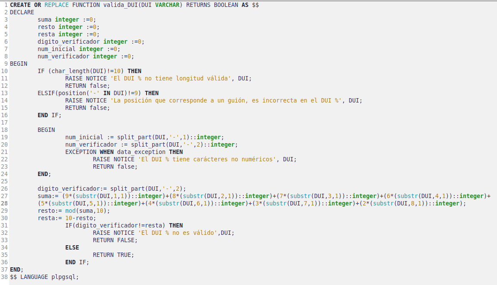
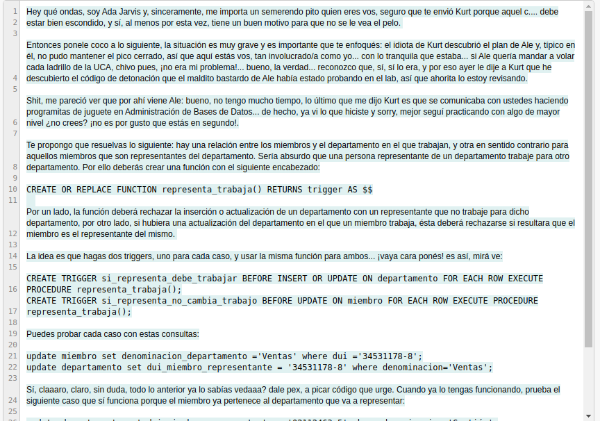
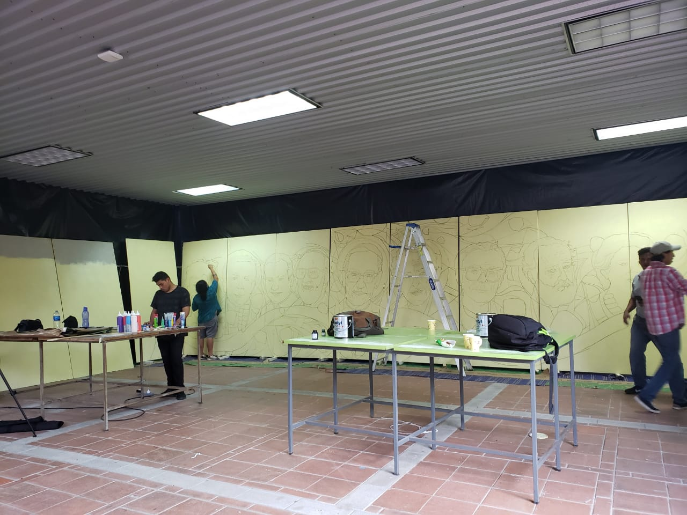
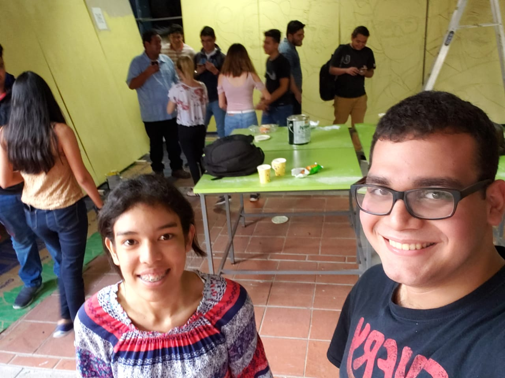
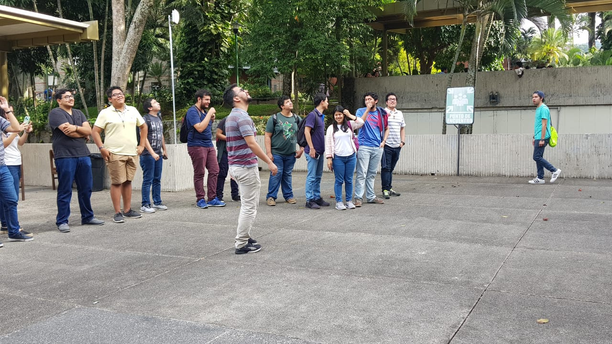
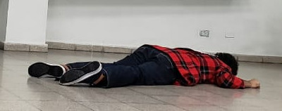
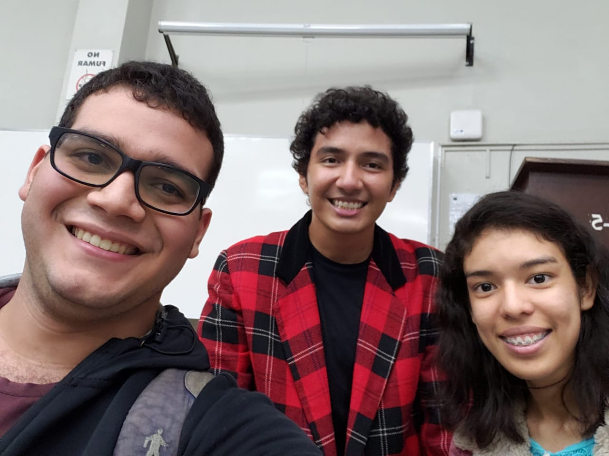

Capítulo 1 "Begin"
Un nuevo villano apareció sembrando terror, su nombre hasta el momento que se ha dejado conocer es Ale Rav. Cuyo propósito es destruir los cimientos de la institución para sus egoístas objetivos. Pero un chico Kurt, ha decidido levantarse y apoyar a los estudiantes a pesar del peligro que corre con ello. Pero debe saber en quién puede confiar, así que plantea ciertos desafíos de programación en un Sistema Gestor de Administración de Bases de Datos.
Primer ejercicio. Programar una función que valide un DUI que se le pase como parámetro y que devuelva verdadero si es correcto o falso si no lo es. Deberá validar longitud (10 caracteres), formato (todos dígitos numéricos con solo un guión en la 9 posición) y el dígito de comprobación debe ser correcto utilizando el algoritmo

Captura del ejercicio resuelto
Capítulo 2 "O-O-O"
Llego una nueva personaje al juego, Ada Jarvis, enviada por Kurt transmite su mensaje a pesar que el villano se encuentra cada vez más cerca. Con el poco tiempo con el que cuenta manda el siguiente problema.
Segundo ejercicio. Crear función que deberá rechazar la inserción o actualización de un departamento con un representante que no trabaje para dicho departamento, por otro lado, si hubiera una actualización del departamento en el que un miembro trabaja, ésta deberá rechazarse si resultara que el miembro es el representante del mismo. Resolverlo utilizando dos triggers.

Imagen del mensaje
Capítulo 3 "Minus Monocromo"
Los estudiantes son convocados por Kurt a salir de sus aulas e ir a un sitio especifíco para ir tras la siguiente pista que ha preparado. A parte cuenta un poco más sobre la relación que antes tenía con Ale Rav.
Tercer ejercicio. Desarrollar una función (y un trigger que la ejecute) que haga lo siguiente:
- Cuando se inserte en la tabla miembro debe comprobarse la coincidencia del departamento expresado en el atributo con la existencia de este miembro en la subclase correcta. Si no está, se debe rechazar la inserción.
- Cuando se actualice el atributo departamento de miembro, entonces debe moverse al miembro a la subclase que corresponda. Esto implica borrar el miembro de la subclase y reinsertarlo donde corresponde. Ten en cuenta que:
QR con las instrucciones

Lugar donde estaba el código QR

Estudiantes escaneando el código QR pegado en el muro de madera para ir por el otro ejercicio
Capítulo 4 "Cumulonimbus"
De nuevo Kurt convocó a los estudiantes en una plaza para esperar el mensaje... por qué todos miran al cielo? Sorpresa! Kurt decidio ser más creativo. Ahora el código QR para el siguiente ejercicio... Llegó en dron.
Cuarto ejercicio. Hay otra especialización, aparentemente es menos estricta, la de proyectos, que es disjunta parcial: la superclase proyectos y sus subclases, web, erp y venta_almacen. Son varias cosas que tenemos que revisar:
- Como es disjunta hay que asegurar la independencia de los miembros de subclases de proyectos, y también la eliminación en la superclase tras el borrado en la subclase.
- Como la especialización no es total, en este caso sí puede haber objetos solamente en la superclase, pero atención, éstos deben tener código de tipo 'O' o se deberá rechazar la inserción, también se debe validar con los otros códigos que los objetos deben estar previamente en las subclases correspondientes, o se debe rechazar la operación. Por suerte ya hay un trigger que impide el ingreso de un proyecto cuyo código no sea válido, así que nos podemos ahorrar ese trabajo.
Entonces, deberás desarrollar:
- Una función que cuando la elimine a algún elemento de las subclases lo eliminen automáticamente de la superclase:
- Una función que, dado que la especialización es disjunta, garantice que no pueda existir el mismo objeto en más de una subclase
- Una función para comprobación de que los proyectos están siendo introducidos en la subclase correcta.

Estudiantes esperando la llegada del dron
Estudiantes participando en la actividad
Capítulo 5 "Commit"
Kurt esta feliz, Ale Rav ha desaparecido. Sin embargo, por cualquier cosa ha decidido irse a otro lugar junto a Ada Jarvis. Antes del viaje decide revelar su identidad y la de Ale Rav... pero mientras se presentaba frente a los estudiantes... Se desplomo y fallecio en el acto para sorpresa de todos! Prevenido hasta el final, sabiendo que podía ocurrir esto, dejo un video y un mensaje donde revelo el rostro del villano.
Código QR para la última fase

Kurt tirado en el suelo

Estudiantes al lado del interprete de Kurt